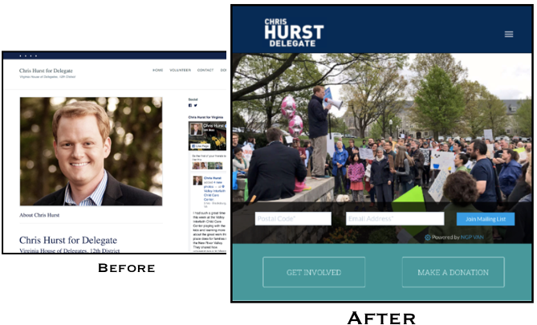

Success Story: Chris Hurst for Virginia Delegate
Virginia 12th - November 2017 - Digital Identity + Social Media Strategy
Overview
Two Tech for Campaigns teams give Democratic candidate Chris Hurst a modern digital presence and a rigorous social strategy as he works to build momentum toward Virginia's 2017 state house elections.
“Seeing the excitement of the Hurst campaign manager when we handed over a brand new web site was hugely rewarding. It's the kind of feeling you hope all clients have when you complete their project.”
– TFC Volunteer/Send Co-Founder Justin Gough
Background
Chris Hurst was thrust onto the national scene in 2015, when his girlfriend and fellow newscaster Alison Parker was murdered on air. In the wake of the tragedy, Chris decided to move from news media to politics, where he felt he could have a bigger impact on the health and stability of Virginia's communities.
Hurst is running against a three-time Republican incumbent, Joseph Yost, who defeated his Democratic challenger by 17% in 2015. But Virginia's 12th district has been increasingly in play in recent years. Hillary Clinton won here in 2016, with 47% of the vote to Donald Trump's 45%, and the 2017 election presents a real chance to flip the district.
As a first-time candidate with a limited budget, Chris needed extra support to set up his basic campaign infrastructure, including a strong digital presence. And although he has been a news media personality for years, he needed to build a more focused and intentional social media following to succeed as a local politician.
The Team
In April 2017, Tech for Campaigns deployed two teams to help Hurst modernize his digital presence and improve his social media strategy:
DIGITAL IDENTITY TEAM:
Left to right:
- Team Lead: Theo Gordon, Product Marketing, Segment
- Design: Kelly Downing, UX Specialist, EPI-USE
- Product Management: Justin Gough, Cofounder, Send
- Web Development: Keith Dechant, Web Developer, Metal Toad Media
SOCIAL STRATEGY TEAM:
Left to right:
- Team Lead: Courtney Robinson, Partner, AVP
- Social Media: Andy Fortson, Social Media Director, Rosewood Creative
- Analytics: Arturo Garcia Aguirre, Business Analyst, DocuSign
- Growth & Paid Marketing: Caroline McCarthy, Paid Growth Marketer, Slack
The Project
The digital identity team created a new campaign website, incorporating a strong digital brand and essential features such as email subscriber capture, donation and volunteer capture, and content delivery functionality. The social strategy team conducted a thorough analysis of Hurst's social media following and performance to date, and provided recommendations to help the campaign focus their outreach and content development efforts.
The Results
TFC delivered a state-of-the-art website and deep social strategy analysis, giving the Hurst campaign a strong platform from which to build toward success in November.
The website transformation was striking, and the clean design and strong messaging earned accolades from across the campaign team. Here's a snapshot:
The report generated by the social strategy team, while less visible, was equally impactful. The analysis uncovered several key insights that informed the campaign's social strategy for the next 7 months; most importantly, the team found that a significant percentage of Hurst's existing followers were outside his district, and recommended focusing energy on increasing his local following while leveraging the national base for fundraising efforts.
With the campaign off to a strong start, the TFC teams are keeping in touch and eagerly awaiting the final outcome in November.
“TFC is a smart way to allocate resources. I get to make a difference by helping candidates that want to make this country better, all while flexing the skills I use every day.”
– TFC Volunteer/DocuSign Business Analyst Arturo Garcia Aguirre
“Contributing your skills to these under-resourced campaigns is probably the biggest lever any individual tech professional has to make a difference right now.”
– TFC Volunteer/Segment Product Marketer Theo Gordon